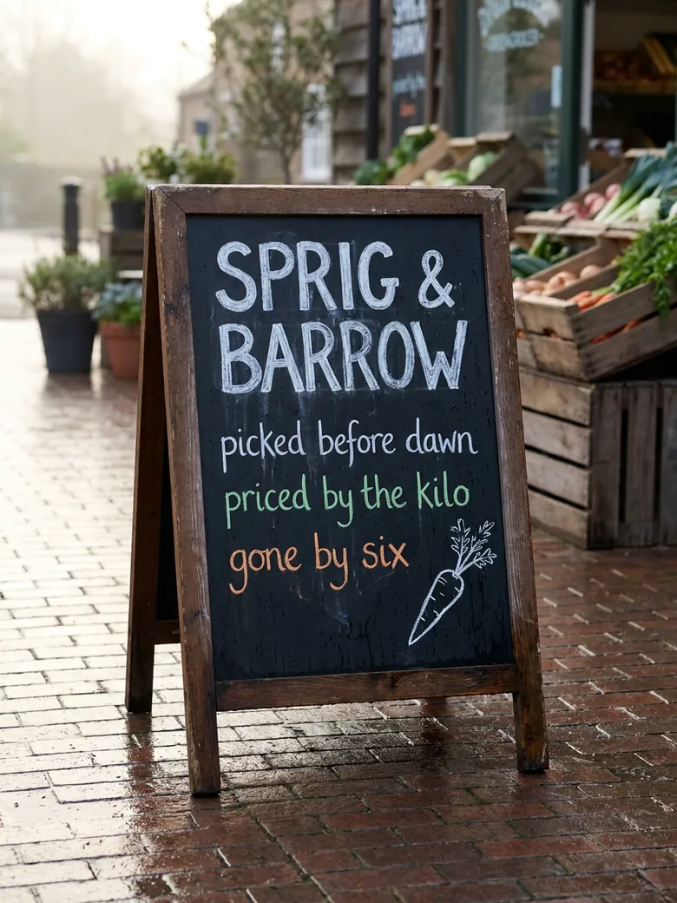
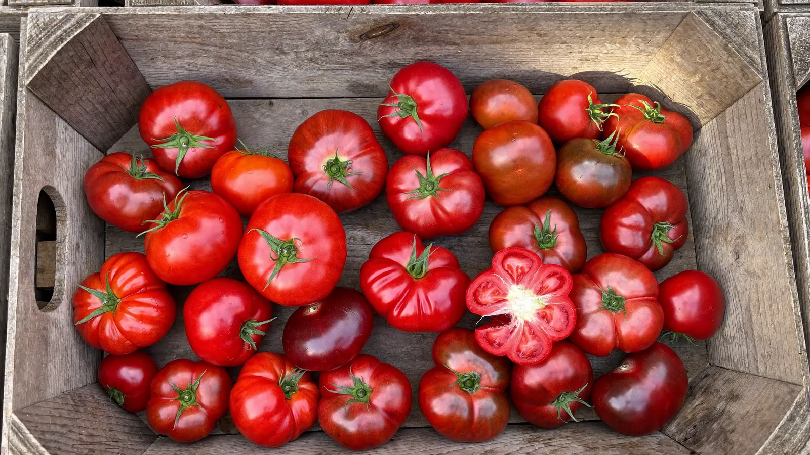
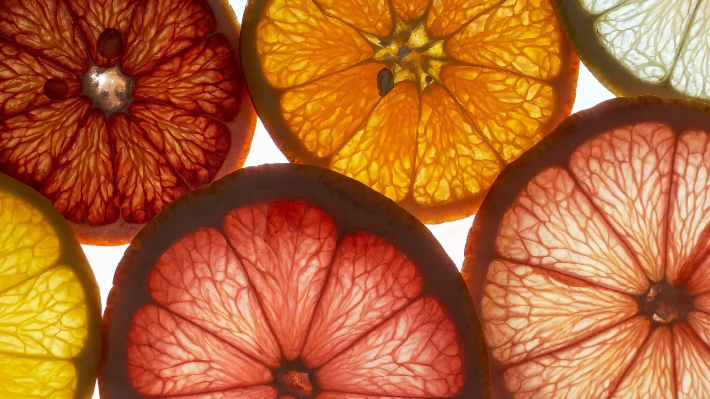
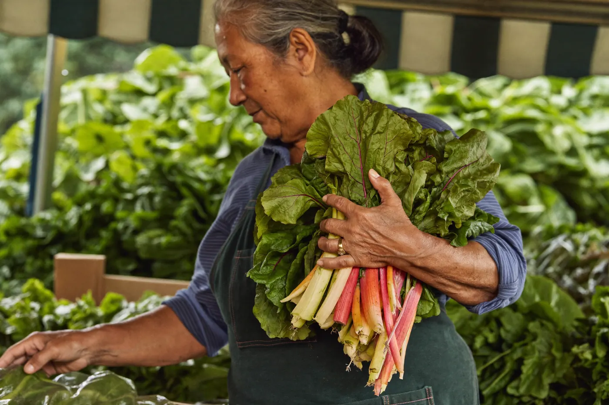
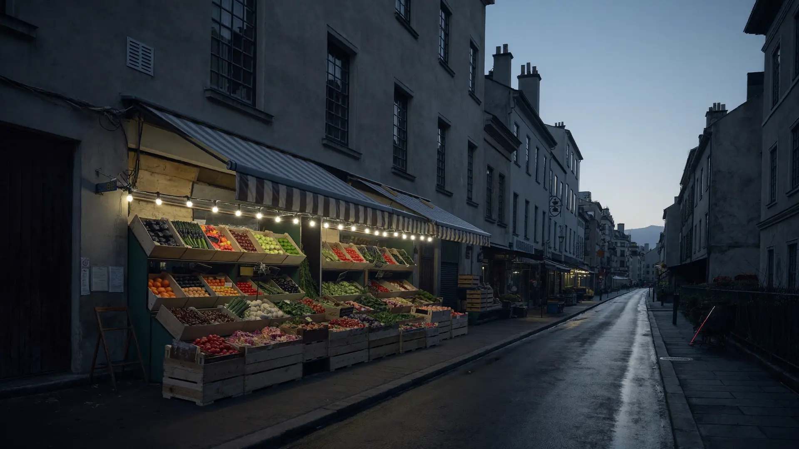

Sprig & Barrow is a market stall with a roof. In by five, stacked by six, and everything on the boards was the best thing in its row that morning. It is priced by the kilo, weighed in front of you, and it does not last the day.


The van is loaded while the streetlights are still on. What comes back decides the whole day — there is no storeroom, no cold chain, no second delivery. If it's on the stall, it came in this morning; if it's good, it's because someone said no to a lot of crates before this one.

No punnets, no shrink-wrap, no small print. The scale sits where you can see it, the needle settles where it settles, and what it says is what you pay. Load it up and see for yourself.
The pan is empty — pick something.
the needle rounds down. always has.
Nothing here arrived by conveyor. Every bunch was picked up, turned over, smelled, and chosen — or put back — by someone who has done it since before you were up. That judgement is the whole shop. The growers get named at the stall, the seconds get sold as seconds, and the wonky ones sit proudly at the end of the shelf.

A stall that never runs out is buying too much. Come at seven for the pick of it, come at five for a kind price on what's left, come at six and we'll see you tomorrow — the van's already being swept out.
12 Barrow Lane — the corner with the striped awning. You'll hear the crates before you see them.
Tuesday to Saturday, dawn until six — or until the boards are empty, whichever comes first.
Bring a bag, or borrow a box from the stack. The scale does the talking; card or coins both fine.
